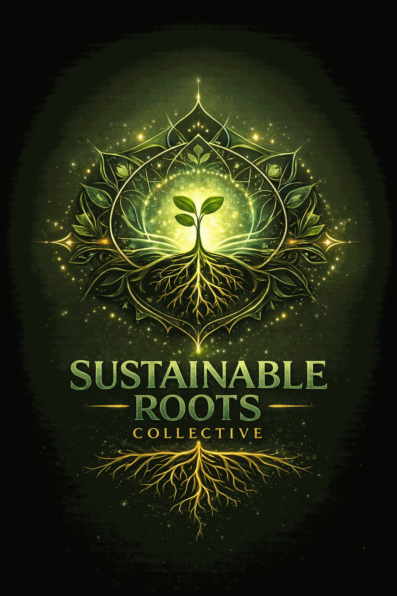

Sunflower
Crunchy, nutty, and hearty. Great for sandwiches, wraps, and snack boxes.
Sustainable Roots Collective grows fresh, small-batch microgreens for local homes, chefs, and community buyers in the Muskegon area, with simple inquiry-based ordering and local pickup.
Home customers can ask about current availability and pickup. Restaurants can inquire about recurring supply. Market shoppers can follow seasonal appearances and updates.

These varieties are chosen for flavor, freshness, and everyday usefulness — from smoothies and sandwiches to chef plating and market baskets.
Crunchy, nutty, and hearty. Great for sandwiches, wraps, and snack boxes.
Sweet, tender, and fresh. Perfect for salads, bowls, and quick sautés.
Clean, mild, and versatile. An easy add-on for salads, smoothies, and meal prep.
Bold, crisp, and peppery. A favorite for tacos, eggs, sandwiches, and garnish.
A balanced mix with visual texture and fresh flavor for plating and elevated everyday meals.
Specialty offerings may rotate in as harvest rhythm and demand grow.
Good food should feel vibrant, local, and alive. These greens are grown in small batches, harvested close to pickup, and shared directly with the people who use them.
As soon as you have real product images, these tiles can be swapped one-for-one without changing the layout.
Whether you are feeding your household, plating in a professional kitchen, or shopping small in person, there is a simple way to connect.
Join the weekly harvest list for pickup updates, current availability, and simple local ordering.
Ask About Current AvailabilityAsk about fresh, local microgreens for garnishes, plating, sandwiches, salads, and rotating menu use.
Restaurant InquiriesSee upcoming appearances, seasonal updates, and where to find Sustainable Roots Collective in person.
Market UpdatesBrian has spent years working in manufacturing, but he has always been drawn to plants, growing, and hands-on systems that turn effort into something real. Sustainable Roots Collective brings those parts of his life together — practical discipline, a love of agriculture, and a desire to build something fresh for his community and family.
Read the StoryCurrent varieties and availability are shared through the weekly harvest list and direct inquiries.
Home customers can ask about pickup. Restaurants can submit a supply inquiry.
Orders are kept simple and close to harvest for freshness and ease.
Microgreens are best enjoyed within days of harvest for flavor, texture, and vitality.
A few quick answers for first-time buyers and curious cooks.
Microgreens are young vegetable and herb greens harvested early for concentrated flavor, color, and texture.
Add them to sandwiches, wraps, eggs, salads, bowls, soups, smoothies, or as a fresh finish on plated dishes.
They are best enjoyed fresh. Storage life varies by variety, but keeping them cool and dry helps them stay vibrant longer.
The first focus is simple local pickup. Delivery may be added selectively as the rhythm becomes sustainable.
Want first access to fresh microgreens, restaurant availability, and market updates? Start with the weekly harvest list.